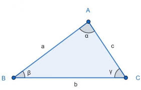
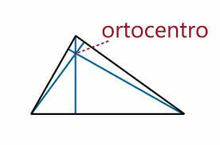
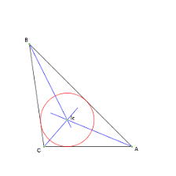
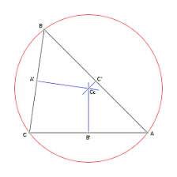
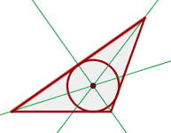

Un triángulo escaleno es un triángulo en el cual los tres lados tienen longitudes diferentes. También los ángulos de un triángulo escaleno tienen diferentes medidas. Algunos triángulos rectángulos pueden ser un triángulo escaleno cuando los otros dos ángulos o los catetos no son congruentes.
Los vértices se nombran con una letra mayúscula en sentido contrario a las agujas del reloj: A, B, C. Los lados se nombran con una letra minúscula igual a la del vértice opuesto: a, b, c. Los ángulos se nombran con una letra griega en el mismo orden que los vértices:
Un triángulo escaleno puede ser acutángulo, rectángulo u obtusángulo según sus ángulos.
Este tipo de polígono es un caso particular dentro de los tipos de triángulo según la longitud de sus lados.
Cabe recordar que un polígono es una figura geométrica bidimensional que se constituye de la unión de distintos puntos (que no formen parte de la misma línea) mediante segmentos de recta. De ese modo, se construye un espacio cerrado.
Otro punto para tomar en cuenta que este tipo de triángulo se consideraría todo lo contrario a un polígono regular, que es aquel cuyos lados miden lo mismo.

Podemos ver algunos puntos característicos de un triángulo escaleno.



